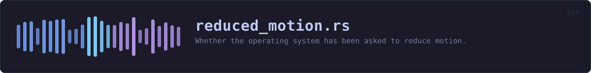

crates/veilvoice-gui/src/reduced_motion.rs
veilvoice-gui · 328 lines · read the source
Whether the operating system has been asked to reduce motion.
Why this exists rather than an egui call
egui does not surface the platform's accessibility preference, so it has to be read here. The website gets this for free -- CSS has prefers-reduced-motion and the browser answers it -- and it would be odd for the desktop app to be the one front-end that ignores the setting.
Read once, at startup
Every platform answers this through a subprocess, and a subprocess per frame would be indefensible in a paint loop. It is read once when the app starts and cached for the session. Someone who changes the setting while VeilVoice is open sees it on the next launch, which is the same behaviour most applications have.
Absolute paths, always
Command::new("defaults") is a search, and on Windows that search includes the current working directory -- which is precisely the defect (F-13) this project fixed in veilvoice-watch and veilvoice-guard. Every tool here is named by absolute path, and an unfound tool answers "I do not know" rather than falling back to a search.
When it cannot tell
Query::Unknown means the platform was not asked or did not answer, and the caller treats that as "no reduction requested" -- because defaulting to off would silently disable animation for everybody on a platform this cannot read, which is a worse failure than missing the preference for the few who set it. The settings panel only claims the system asked for reduced motion when it actually saw it say so.
WHAT THIS FILE CONTAINS
328 lines defining 8 functions (2 public), 1 type and 0 constants. Everything below is read out of the source, so it cannot disagree with the code.
The types it owns.
enum Queryline 68 — What the platform said.
What happens when it runs. These are the ways in: public, and nothing else in this file calls them, so they are what an outside caller reaches first.
Query::reducesline 81 — Whether to treat this as a request to reduce motion.queryline 101 — Ask the operating system.
reachesmacos_query,unix_query,windows_query,no_window,tool,parse_user_preferences_mask
WHAT CALLS WHAT
The functions this file defines, and the calls between them. An edge means the callee's name appears, called, inside the caller's body — a syntactic reading, not a type-resolved one.
The same graph as Mermaid source
%%{init: {"theme":"base","themeVariables":{"background":"#1a1b26","primaryColor":"#1f2335","primaryTextColor":"#c0caf5","primaryBorderColor":"#7aa2f7","secondaryColor":"#16161e","tertiaryColor":"#16161e","lineColor":"#737aa2","textColor":"#c0caf5","mainBkg":"#1f2335","nodeBorder":"#7aa2f7","clusterBkg":"#16161e","clusterBorder":"#2f3549","fontFamily":"ui-monospace, SFMono-Regular, Consolas, monospace","fontSize":"14px"}}}%%
flowchart TD
n_no_window["no_window<br/>line 56"]
n_reduces(["Query::reduces<br/>line 81"])
n_tool["tool<br/>line 87"]
n_query(["query<br/>line 101"])
n_windows_query["windows_query<br/>line 125"]
n_parse_user_preferences_mask["parse_user_preferences_mask<br/>line 155"]
n_macos_query["macos_query<br/>line 179"]
n_unix_query["unix_query<br/>line 204"]
n_macos_query --> n_no_window
n_macos_query --> n_tool
n_query --> n_macos_query
n_query --> n_unix_query
n_query --> n_windows_query
n_unix_query --> n_no_window
n_unix_query --> n_tool
n_windows_query --> n_no_window
n_windows_query --> n_parse_user_preferences_mask
n_windows_query --> n_tool
click n_no_window href "https://github.com/tilas01/veilvoice/blob/main/crates/veilvoice-gui/src/reduced_motion.rs#L56" "open the source"
click n_reduces href "https://github.com/tilas01/veilvoice/blob/main/crates/veilvoice-gui/src/reduced_motion.rs#L81" "open the source"
click n_tool href "https://github.com/tilas01/veilvoice/blob/main/crates/veilvoice-gui/src/reduced_motion.rs#L87" "open the source"
click n_query href "https://github.com/tilas01/veilvoice/blob/main/crates/veilvoice-gui/src/reduced_motion.rs#L101" "open the source"
click n_windows_query href "https://github.com/tilas01/veilvoice/blob/main/crates/veilvoice-gui/src/reduced_motion.rs#L125" "open the source"
click n_parse_user_preferences_mask href "https://github.com/tilas01/veilvoice/blob/main/crates/veilvoice-gui/src/reduced_motion.rs#L155" "open the source"
click n_macos_query href "https://github.com/tilas01/veilvoice/blob/main/crates/veilvoice-gui/src/reduced_motion.rs#L179" "open the source"
click n_unix_query href "https://github.com/tilas01/veilvoice/blob/main/crates/veilvoice-gui/src/reduced_motion.rs#L204" "open the source"
classDef entry fill:#1f2335,stroke:#7aa2f7,color:#c0caf5
class n_reduces,n_query entry
classDef helper fill:#1f2335,stroke:#bb9af7,color:#c0caf5
class n_no_window,n_tool,n_windows_query,n_parse_user_preferences_mask,n_macos_query,n_unix_query helperThis site loads no third-party script, so it cannot run Mermaid; the diagram above is the same nodes and edges drawn by the generator instead. GitHub renders the source below directly.
ITEMS
| Item | Line | Documentation |
|---|---|---|
no_window fn | 56 | Spawn without a console window. |
Query pub enum | 68 | What the platform said. |
Query::reduces pub fn | 81 | Whether to treat this as a request to reduce motion. |
tool fn | 87 | Resolve a tool to an absolute path. |
query pub fn | 101 | Ask the operating system. |
windows_query fn | 125 | Windows: "Show animations in Windows" lives in the UserPreferencesMask under HKCU\Control Panel\Desktop. |
parse_user_preferences_mask fn | 155 | Pull the mask out of reg query output and read the animation bit. |
macos_query fn | 179 | macOS: the Accessibility "Reduce motion" switch. |
unix_query fn | 204 | Linux and the BSDs: GNOME's enable-animations, which the other major desktops have largely adopted as the common key. |